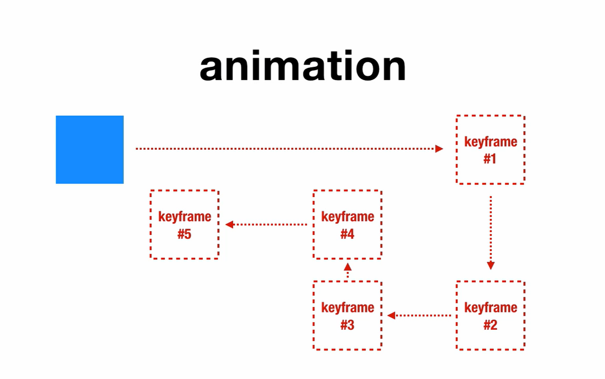
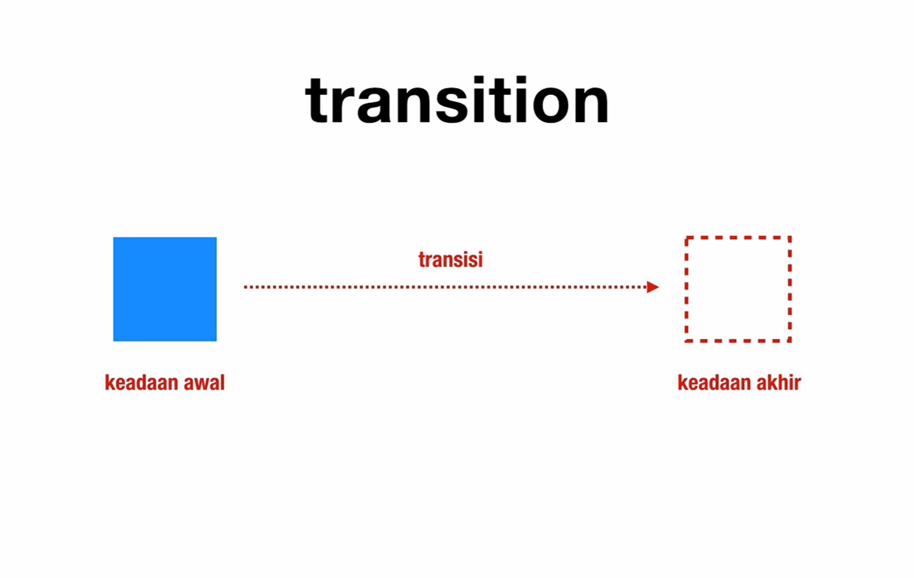
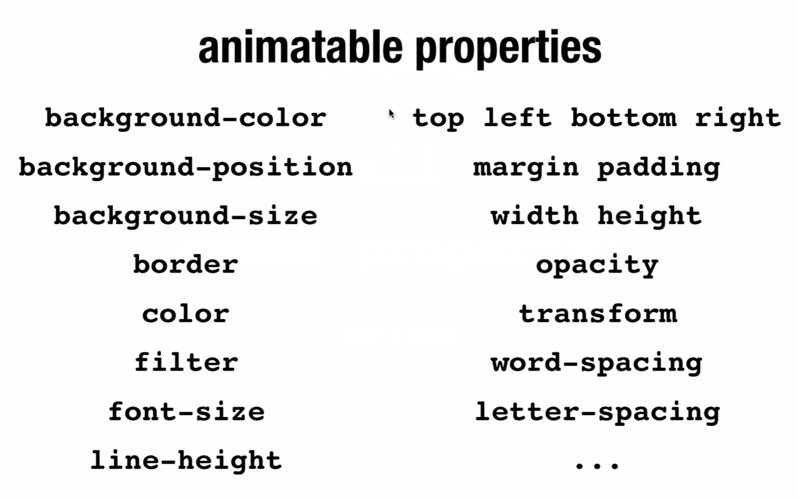

Transition
Transition adalah properti CSS 3 yang memungkinkan kita dapat mengubah nilai dari property HTML secara harus .
Ada satu lagi properi CSS 3 yang memiliki fungsi sama seperti Transition yaitu Animation. Transition dan animation sangat mirip namun yang membedakannya adalah keadaan awal dan keadaan akhirnya.
*Note:Selalu simoan nilai/property transition pada posisi awal.
-
Animation
Animation tidak hanya memiliki keadaan awal dan akhir saja namun animation memiliki keyframe atau banyak keadaan sampai ke keadaan akhir
 -
Transition
Transition hanya memiliki keadaan akhir dan keadaan awal yang membuat hal itu disebut sebagai transisi.

Syntax Transition Property : transition: [propety] [durasi] [fungsi] [delay];
Keterangan:
| Durasi |
diisi dengan angka dan satuan s(second)/ms(milisecond). |
| Property |
diisi dengan properti yang ingin diubah atau dengan nilai all untuk default dan none untuk menghapus. 
|
| Fungsi |
biasa disebut timing function yang aratinya pergerakan apa yang ingin dilakukan pada saat transisi. 
|
| Delay |
diisi dengan angka dan satuan s(second)/ms(milisecond). |
Contoh Penggunaan :
-
Penggunaan Durasi Value
Arahkan cursor Anda ke kotak bewarna hijau untuk melihat perubahan dan perbedaan dari kedua kotak tersebut dan dapat dimengerti dengan lebih mudah.
Tanpa Transition
div { width: 100px; height: 100px; background-color: lightgreen; margin: auto; } div:hover { transform: rotate(45deg); }Menggunakan Transition
div { width: 100px; height: 100px; background-color: lightgreen; margin: auto; transition: 1s; } div:hover { transform: rotate(45deg);} -
Penggunaan Property Value
Arahkan cursor Anda ke kotak bewarna hijau untuk melihat perubahan dan perbedaan dari kedua kotak tersebut dan dapat dimengerti dengan lebih mudah.
Tanpa property value
div { width: 100px; height: 100px; background-color: lightgreen; margin: auto; transition: all 1s; } div:hover { transform: rotate(45deg); margin-left: 200px; background-color: salmon; }Menggunakan property value
div { width: 100px; height: 100px; background-color: lightgreen; margin: auto; transition: margin-left 1s; } div:hover { transform: rotate(45deg); margin-left: 200px; background-color: salmon; }Dapat dilihat kotak yang tanpa property value terlihat lebih halus pergerakannya dibandingkan dengan yang menggunakan property value, karena perbedaanya terdapat pada "all" dan "margin-left". "all" membuat semua property terkena transisi sedangkan margin-left membuat hanya property margin-left yang terkena transition.
-
Penggunaan Fungsi Value
Arahkan cursor Anda ke kotak bewarna hijau untuk melihat perubahan dan perbedaan dari kedua kotak tersebut dan dapat dimengerti dengan lebih mudah.
easeease-inease-outease-in-outlinearcubicScript CSS:
.container { width: 500px; border: 3px solid black; margin: auto; } .container:hover .kotak { transform: rotate(720deg); margin-left: 400px; background-color: salmon; } .kotak { width: 100px; height: 100px; background-color: lightgreen; margin: 5px 0; text-align: center; line-height: 100px; } .kotak1 {transition: 1s ease;} .kotak2 {transition: 1s ease-in;} .kotak3 {transition: 1s ease-out;} .kotak4 {transition: 1s ease-in-out;} .kotak5 {transition: 1s linear;} .kotak6 {transition: 1s cubic-bezier(0.175, 0.885, 0.32, 1.275);} -
Penggunaan Delay Values
Arahkan cursor Anda ke kotak bewarna hijau untuk melihat perubahan dan perbedaan dari kedua kotak tersebut dan dapat dimengerti dengan lebih mudah.
Tanpa property value
div { width: 100px; height: 100px; background-color: lightgreen; margin: auto; transition: 3s 2s; } div:hover { transform: rotate(45deg); margin-left: 200px; background-color: salmon; }Menggunakan property value
div { width: 100px; height: 100px; background-color: lightgreen; margin: auto; transition: margin-left 3s, transform 3s 2s, background-color 2s 3s; } div:hover { transform: rotate(45deg); margin-left: 200px; background-color: salmon; }